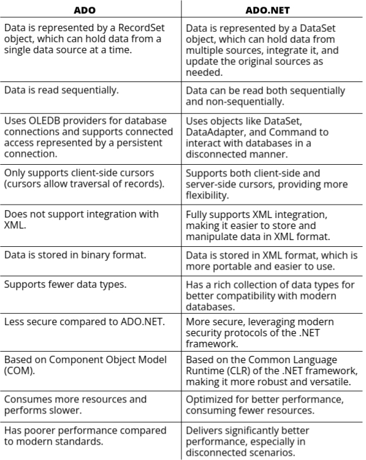

ADO & ADO.NET
ADO (ActiveX Data Objects) and ADO.NET are technologies provided by
Microsoft for accessing and managing data from databases and other sources.
While ADO is an older technology that works in a connected manner requiring continuous interaction with
the database,
ADO.NET is the advanced version introduced with the .NET framework, designed to work in
a disconnected manner, improving efficiency and performance.
ADO (ActiveX Data Objects)
- ActiveX Data Objects (ADO) is a technology used to interact with databases and
other data sources. It provides a unified programming interface, allowing developers to use the
same set of objects regardless of the underlying data source.
- In ADO, applications typically require long-lived database connections, which
means the connection to the database remains open for an extended period. This also involves
locking database resources.
- A single Connection object is used in ADO to establish a connection to the
database.
- Data is managed using a RecordSet object, which holds data from a single query
or a specific data source.
ADO.NET
- ADO.NET is the advanced successor to ADO, introduced as part of the .NET
framework. It provides consistent access to various types of data sources, such as relational
databases, XML files, and more.
- Unlike ADO, ADO.NET does not require locking or long-lived connections. It uses
a disconnected architecture to improve performance and scalability.
- ADO.NET uses separate objects, such as DataSets and
DataAdapters, to represent and manipulate data, enabling faster and more
efficient access.
- It seamlessly integrates with XML, allowing data to be represented and stored
in XML format.
Differences between ADO and ADO.NET

Data Providers by .NET Framework
Data Providers in .NET Framework are components that enable applications to interact
with data sources such as SQL Server, Oracle, and others. They manage the connection to the data source,
execute commands, and retrieve results. Each provider is designed to work with a specific type of data
source.
-
.NET Framework Data Provider for SQL Server: This provider is optimized for
accessing Microsoft SQL Server. It requires the System.Data.SqlClient namespace and
provides efficient and secure access to SQL Server databases.
-
.NET Framework Data Provider for OLE DB: This provider is used to connect to data
sources that use OLE DB (Object Linking and Embedding, Database). It requires the
System.Data.OleDb namespace and is ideal for accessing legacy databases.
-
.NET Framework Data Provider for ODBC: ODBC (Open Database Connectivity) is a
standard API for accessing database management systems. This provider is used to connect to data
sources using ODBC drivers and requires the System.Data.Odbc namespace.
-
.NET Framework Data Provider for Oracle: This provider is specifically designed to
work with Oracle databases. It requires the System.Data.OracleClient namespace
(deprecated in recent .NET versions but still relevant for legacy systems).
.NET Framework Data Provider Objects
The .NET Framework data provider includes several core objects that work together to manage data
operations:
-
Connection: Used to establish and manage a connection to a data source. For
example, a connection to a SQL Server database is established using a SqlConnection
object.
-
Command: Used to execute SQL queries or stored procedures against a database.
Examples include SqlCommand for SQL Server and OleDbCommand for
OLE DB.
-
Data Reader: Provides a forward-only, read-only access to data retrieved from a
database. For instance, SqlDataReader is used with SQL Server.
-
Data Adapter: Acts as a bridge between a database and a DataSet.
It is used to retrieve data from the database and update it back after modifications.
The data provider model in .NET is flexible and allows developers to interact with various types of
databases using namespaces and classes tailored for specific database technologies. By using these
providers, developers can write data-driven applications efficiently and maintain compatibility with
different data sources.